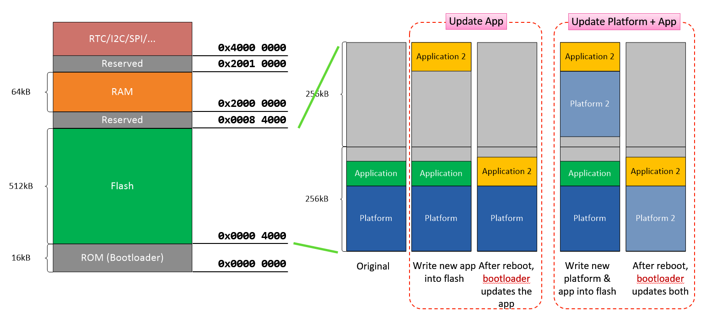

1. 概述
本文介绍在 ING918xx 上移植、实现一种客户私有 OTA Service 过程。INGCHIPS OTA Service 的开发和演示请参考 空中固件升级（FOTA）的快速演示。
2. ING918xx OTA 实现方式
- 下载新的程序（下图中的 Application 2）到 Flash 的空闲区域。
- 提供新程序的启动地址
- 重启，BootLoader 会自动搬移并完成更新

3. 实现细节
创建新文件 ota_private_service.c。
3.1 准备状态记录信息结构体
// 包含必须的头文件
#include <stdio.h>
#include <stdint.h>
#include <string.h>
#include "ingsoc.h"
#include "platform_api.h"
#include "rom_tools.h"
#include "eflash.h"
#include "ota_service.h"
// 创建状态记录信息结构体
#define PAGE_SIZE (8192)//static size for one flash page
typedef enum
{
OTA_SERVICE_DISABLED = 0,
OTA_SERVICE_START = (1 << 0),
OTA_SERVICE_END = (1 << 1)
} ota_service_flag_e;
typedef struct
{
ota_ver_t ota_ver;//place to save app version
ota_service_flag_e ota_service_flag;//start/end
// static data from controller
uint32_t ota_load_addr;//load address of new app
uint32_t ota_flash_base_addr;//flash address to save ota data
uint32_t ota_file_size;//total size of new app bin
// dynamic variables to hold downloading progess
uint32_t ota_curr_page_addr;
uint32_t ota_curr_page_size;
uint8_t page_buffer[PAGE_SIZE];
uint32_t ota_total_size;//size that has been program to flash
} ota_service_data_s;
ota_service_data_s ota_service_data =
{
.ota_service_flag = OTA_SERVICE_DISABLED,
.ota_ver = { .app = {.major = 0, .minor = 0, .patch = 0} },
.ota_curr_page_addr = 0,
.ota_total_size = 0
};
3.2 创建初始化接口
在开始下载之前，有三个信息需要提供：
- load addr：新程序的启动地址。
- flash addr：重启之前，用来放置新程序的 Flash 基地址。
- file size: 新程序的大小。
//需要注意的是所有地址都必须是word对齐的，文件大小不能超过flash的空闲区域大小。
uint8_t ota_service_init(uint32_t load_addr, uint32_t flash_addr, uint32_t file_size)
{
if ((load_addr & 0x3) || (flash_addr & 0x3) || (!file_size) ||
((flash_addr + file_size) > 0x84000))
{
return 0;
}
ota_service_data.ota_load_addr = load_addr;
ota_service_data.ota_flash_base_addr = flash_addr;
ota_service_data.ota_file_size = file_size;
ota_service_data.ota_curr_page_addr = flash_addr;
ota_service_data.ota_service_flag = OTA_SERVICE_START;
return 1;
}
接口返回为0， 代表初始化失败。
3.3 创建初始化接口
准备 OTA 数据的下载接口：
// 将接受到的数据暂时放在buffer中，满足一个page的大小才可以擦写到flash
#define OTA_SERVICE_SAVE_PAGE_DATA(data, len) \
{ \
memcpy(ota_service_data.page_buffer + ota_service_data.ota_curr_page_size, data, len); \
ota_service_data.ota_curr_page_size += len; \
}
// 将一个page的数据写到flash
#define OTA_SERVICE_FLUSH_PAGE_DATA \
{ \
if(ota_service_data.ota_curr_page_size > 0) {\
program_flash(ota_service_data.ota_curr_page_addr, ota_service_data.page_buffer, ota_service_data.ota_curr_page_size); \
ota_service_data.ota_curr_page_addr += 0x2000; \
ota_service_data.ota_curr_page_size = 0; }\
}
// 数据处理接口，全部OTA数据下载完成后，返回1，否则返回0
uint8_t ota_service_handle(const uint8_t* data, uint16_t len)
{
uint8_t complete = 0;
uint32_t part1_size = 0;
uint32_t part2_size = 0;
if(ota_service_data.ota_service_flag != OTA_SERVICE_START) return 0;
if((ota_service_data.ota_curr_page_size + len) > PAGE_SIZE)
{
part1_size = PAGE_SIZE - ota_service_data.ota_curr_page_size;
part2_size = len - part1_size;
}
else
{
part1_size = len;
}
if(part1_size > 0)
{
OTA_SERVICE_SAVE_PAGE_DATA(data, part1_size);
}
if((part2_size > 0) || (ota_service_data.ota_curr_page_size == PAGE_SIZE))
{
OTA_SERVICE_FLUSH_PAGE_DATA;
}
if(part2_size > 0)
{
OTA_SERVICE_SAVE_PAGE_DATA(data+part1_size, part2_size);
}
ota_service_data.ota_total_size += len;
if(ota_service_data.ota_total_size == ota_service_data.ota_file_size)
{
complete = 1;
OTA_SERVICE_FLUSH_PAGE_DATA;
ota_service_data.ota_service_flag = OTA_SERVICE_END;
}
return(complete);
}
3.4 创建重启接口
// 数据下载完成后，重启系统
void ota_service_reboot()
{
uint8_t buffer[50];
if(ota_service_data.ota_service_flag != OTA_SERVICE_END) return;
ota_meta_t *meta = (ota_meta_t *)(buffer + 0);
meta->entry = 0;
meta->blocks[0].dest = ota_service_data.ota_load_addr;
meta->blocks[0].src = ota_service_data.ota_flash_base_addr;
meta->blocks[0].size = ota_service_data.ota_total_size;
program_fota_metadata(meta->entry, 1, meta->blocks);
platform_reset();
}
4. 实现细节
调用流程如下：
-
在profile.c中找到以下 API，以及确定 OTA 使用到的
handle（eg. HANDLE_OF_OTA_DATA）static int att_write_callback(……) { switch (att_handle) { case HANDLE_OF_OTA_DATA: // add your ota code return 0; default: return 1; } } -
主设备发送 start cmd，启动 OTA，并传递相关信息(load_addr, flash_addr, file_size)
case HANDLE_OF_DATA: ... if(start cmd) { ret = ota_service_init(load_addr, flash_addr, file_size); //check ret } return 0; -
主设备发送 data cmd，开始 OTA 下载
case HANDLE_OF_DATA: ... if(data cmd) { ret &= ota_service_handle(buffer, buffer_size); //check ret } return 0; -
主设备发送 reboot cmd，重启设备，完成 OTA 下载
case HANDLE_OF_DATA: ... if(reboot cmd) && (ret == 1) { ota_service_reboot(); } return 0;
5. 可能的问题
- 下载程序没有添加应用层的校验，视情况可以自行实现，比如CRC。
- 没有验证功能（将下载后的程序读取到主设备，对比验证），读取部分可以用memcpy实现，可以根据情况自行添加。